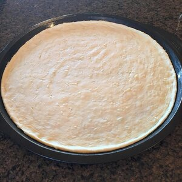

Pizza Dough

Decription
This recipe is very simple and only includes six ingredients! As you make this over and over,
you will start to get a feel for the texture and consistency of the dough and eventually will not
need to pay too close of attention to the measurement of ingedients.
Ingredients
- 3 1/2 cups of bread flour
- 1 1/4 cups of warm water (110F)
- 2 TSP of active dry yeast
- 2 TSP of sugar
- 1 TSP of salt
- 2 TBSP of olive oil
Steps
- Combine the bread flour, salt, and suger in a large bowl. Set aside.
- Add yeast to 2 TSBP of warm water, wait until dissolved and bubbly.
- Add yeast mixture, olive oil, and most of the warm water to dry ingredients. Mix together with a wooden spoon until dough is shaggy.
- Turn dough onto a work bench and knead the dough, turning 90 degrees for every fold, for about 7-10 minutes. If the dough is tacky add more bread flour 1 TBSP at a time, if the dough is tough and hard to work, add water 1 TSP at a time.
- Take 2 TBSP of olive oil and coat the outside of the dough ball. Let rest, covered in a warm place, for about 1-2 hours, or until the dough has doubled in size.
- Divide the dough into 2-3 sections and roll out each to the desired thickness.
- Add toppings to your dough before baking. Bake pizza for 8-10 mins in a 450F prepped oven. I prefer to cook on cast iron, but a pizza stone or even baking sheet would suffice.
- Let cool for 15 minutes before serving.